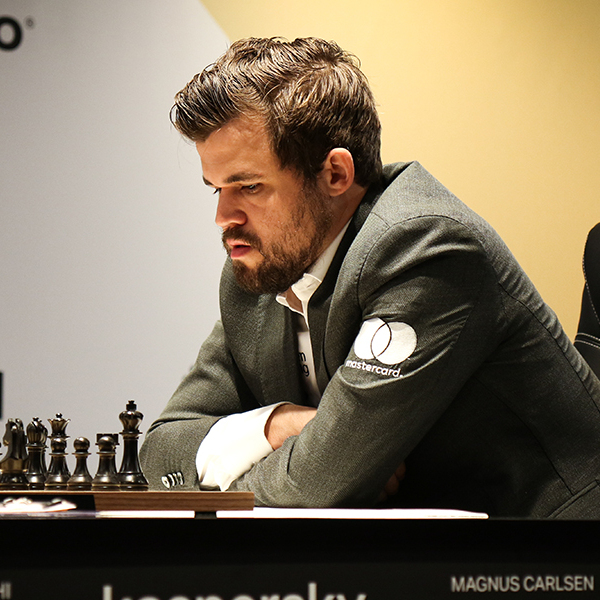
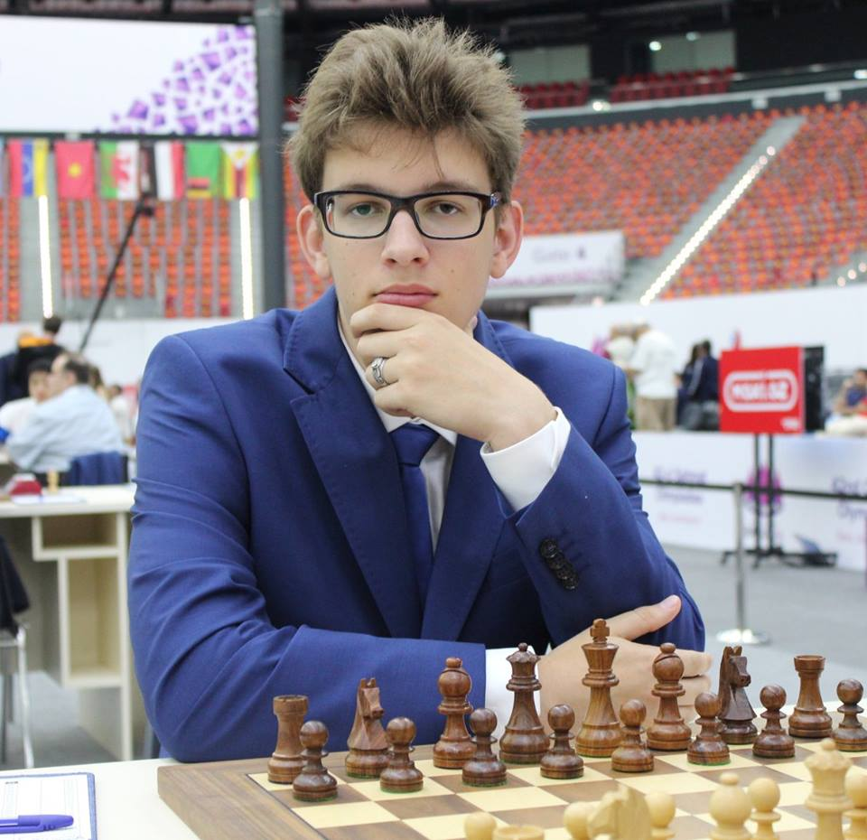
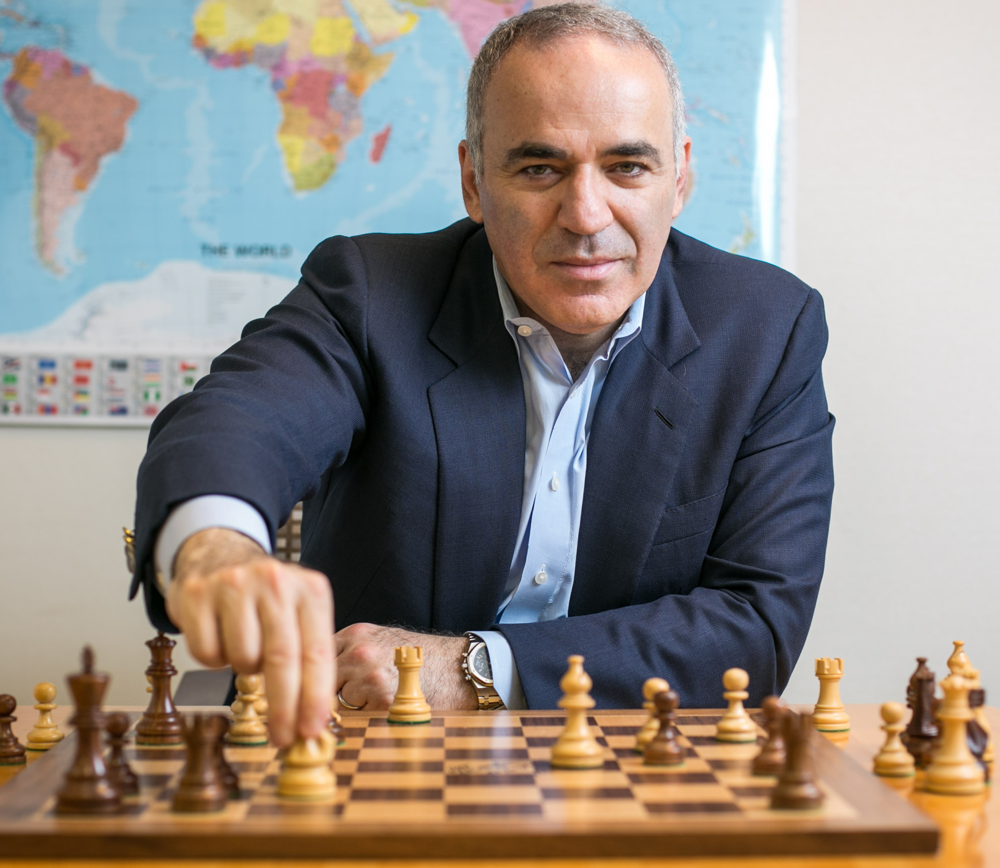
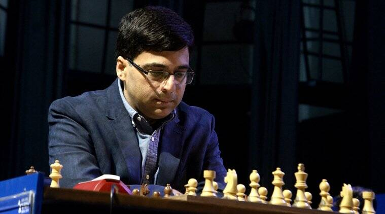

Galeria arcymistrzów

Magnus Carlsen
- ♔ Urodzony: 30.11.1990r.
- ♔ Szacowany poziom ELO: 2828.
- ♔ Otrzymał tytuł arcymistrza w 2004r.
- ♔ Zdobył pierwsze mistrzostwo świata w szachach błyskawicznych w Berlinie w 2015r.
- ♔ Zwyciężył po raz piąty Norway Chess title w 2022r.
- ♔ Zwyciężył w Pucharze Świata w szachach w 2023r.

Jan-Krzysztof Duda
- ♔ Urodzony: 26.04.1998r.
- ♔ Szacowany poziom ELO: 2726.
- ♔ Otrzymał tytuł arcymistrza w 2013r.
- ♔ 1 lipca 2017 roku został pierwszym polskim juniorem, który przekroczył barierę 2700 punktów.
- ♔ Jest najwyżej sklasyfikowanym Polakiem w szachach.
- ♔ 23 maja 2022 wygrał turniej szachów szybkich i błyskawicznych Superbet Rapid and Blitz Poland 2022.

Hikaru Nakamura
- ♔ Urodzony: 09.12.1987r.
- ♔ Szacowany poziom ELO: 2780.
- ♔ Otrzymał tytuł arcymistrza w 2003r.
- ♔ Został najmłodszym amerykańskim szachistą, z tytułem arcymistrza.
- ♔ W 2013 zwyciężył w turnieju London Chess Classic 2013.
- ♔ Prowadzi kanał na YT, gdzie ma ponad 2 mln subskrybentów.

Garry Kasparov
- ♔ Urodzony: 13.04.1963r.
- ♔ Szacowany poziom ELO: 2812.
- ♔ Otrzymał tytuł arcymistrza w 1980r.
- ♔ Poległ w starciu z powstałym programem szachowym Deep Blue.
- ♔ Był pierwszym szachistą, który przekroczył ranking 2800.
- ♔ Napisał książkę "How life imitates chess?"

Viswanathan Anand
- ♔ Urodzony: 11.12.1969r.
- ♔ Szacowany poziom ELO: 2754.
- ♔ Otrzymał tytuł arcymistrza w 1989r.
- ♔ Cieszy się niezmierną sławą w swoim kraju, porównywalną do Lewandowskiego w Polsce.
- ♔ Jest ambasadorem World Wide Fund for Nature.


{kind=link}
{kind=link}
{kind=link}
{kind=link}